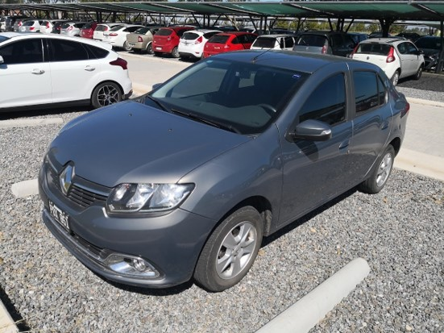

|  |
| Security | So now we have airbags! ...and fog lights, and quite robust car. It is very stable but it dose feel quite vibrant when passing the 130 km/h. It has three stars by the LatinCap and by having disc brake, plus the abs has a great answer when brake dry. It’s a modest car, with certain level of anti-theft devices. |
|---|---|
| Maintenance | Cheap and easy. Also did the service constrol in an official Service Center every time. The 60.000 km service was a little pricy, but I sold it before I have to make it. Changing lamps, or a tire (witch I did several times in this car) was ferly easy too. |
| Reliability | Almost 100%... Just once, the engine did not start, never knew why. Next day started like nothing happened. That a side, never a problem. |
| Agility | It's a gentle car. This is a fairly heavy car with an 1,6 litters engine. I think that had 105hp. But not much torch. So, it was a car to ride more comfortable but not that elusive. |
| Comfort | More than expected Here there was some improvement. With a media and navigation screen, parking sensors, cup holders!, climate control, better driving position, better seats, fearly spacious. Far from being a luxurious car, was more than enough for me. A great space for four people ride, and no problem with 3 traveler in the back ether. |
| Practicality | Sedan cars are the lest funsional. Huge trunk, but I did realize that hatchbacks are way more versatile when having to move big things. |
| Pros |
|
|---|---|
| Cons |
|